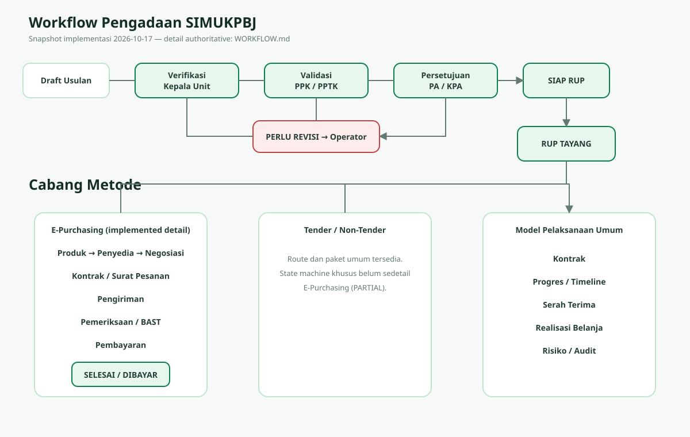

Workflow Pengadaan SIMUKPBJ
Diagram ini disinkronkan dengan WORKFLOW.md pada 2026-10-17. E-Purchasing memiliki workflow detail terverifikasi; Tender/Non-Tender ditandai parsial.

Diagram ini disinkronkan dengan WORKFLOW.md pada 2026-10-17. E-Purchasing memiliki workflow detail terverifikasi; Tender/Non-Tender ditandai parsial.
